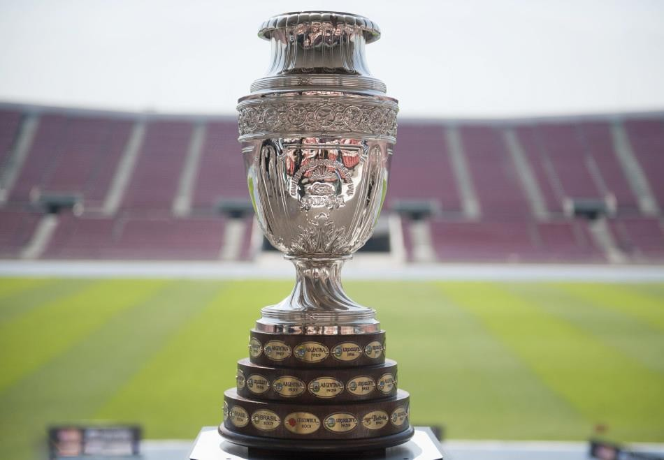

Copa América

La Copa América (en espagnol : Campeonato Sudamericano Copa América, en portugais : Campeonato Sul-Americano Copa América), la Coupe d'Amérique en français, est la plus importante compétition internationale de football organisée par la CONMEBOL
(avec des invitations pour des équipes de la CONCACAF ou l'AFC). Elle a lieu alternativement tous les deux, trois ou quatre ans depuis la première édition en 1916. Depuis 1984 et la disparition du British Home Championship, la Copa América est le plus vieux tournoi continental de l'histoire du football. L'actuel tenant du titre est le Brésil, vainqueur en 2019.
Historique
Le format actuel du tournoi implique douze équipes nationales en compétition sur les sites d'un pays hôte au cours d'une période d'environ un mois. La confédération sud-américaine ne compte que dix membres, des équipes nationales des autres confédérations de la FIFA sont donc invitées à combler les deux places vacantes. Le Mexique, membre de la CONCACAF, est ainsi régulièrement convié depuis sa première participation en 1993. Depuis 1999, des équipes de l'AFC sont également conviées, comme c'est le cas pour le Japon et le Qatar en 2019. En 45 éditions, huit équipes nationales ont remporté le titre. L'Uruguay mène au nombre de victoires avec 15 titres. L'Argentine en possède 14, le Brésil a remporté neuf trophées, le Chili, le Paraguay et le Pérou suivent avec deux titres chacun. Les deux autres champions sont la Bolivie et la Colombie, avec un titre chacun. La Copa América est un des événements sportifs mondiaux les plus suivis. L'édition 2007 a eu une audience estimée à 530 millions de téléspectateurs en Amérique latine et une audience mondiale cumulée de quatre milliards de personnes à travers 185 pays. Le tenant du titre de la Copa América était invité à participer à l'édition suivante de la Coupe des confédérations2 avant la suppression de cette dernière en 2019.